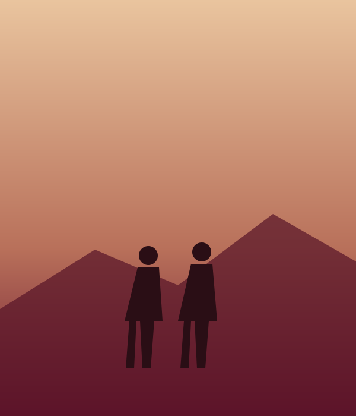

Accessible
Qualitat tècnica a un preu que no et fa pensar-t'ho. La roba de cada dia.
Roba
Qualitat tècnica a un preu que no et fa pensar-t'ho. La roba de cada dia.
Teixits heavy, acabats superiors. Peces que duren tantes temporades com tu.
Carreres
Curses populars, cros i social runs de tot Catalunya. Una cada setmana, amb quedada WURP inclosa.
Clubs
Clubs socials, de marca i federats. Tria'n un al teu ritme i al teu barri. Ningú es queda enrere.
Llistat basat en fonts públiques. Si portes un club i vols actualitzar-ne les dades, fes-nos-ho saber amb el formulari.
Reptes · Línia exclusiva
Apunta't i connecta Strava. Comença el compte enrere.
Al teu ritme. El que compta és no parar.
Les teves activitats es comproven soles.
Numerada, a casa teva. No en farem més.
Comunitat · @wurp.run

Nosaltres
Vam començar sent sis persones corrent pel parc de la Ciutadella els dijous al vespre. Ara som centenars. Cadascú amb el seu objectiu: una primera 10K, baixar d'1:30 a la mitja, tornar després d'una lesió.
Vam veure que el que ens feia avançar no era la roba ni el rellotge. Era tenir un objectiu clar i gent amb qui treballar-lo. WURP és això: clubs socials on ningú es queda enrere, roba feta per durar i reptes que es guanyen amb constància.
No es tracta de ser més ràpid que ningú. Es tracta de saber quin és el teu objectiu. What's ur peak?